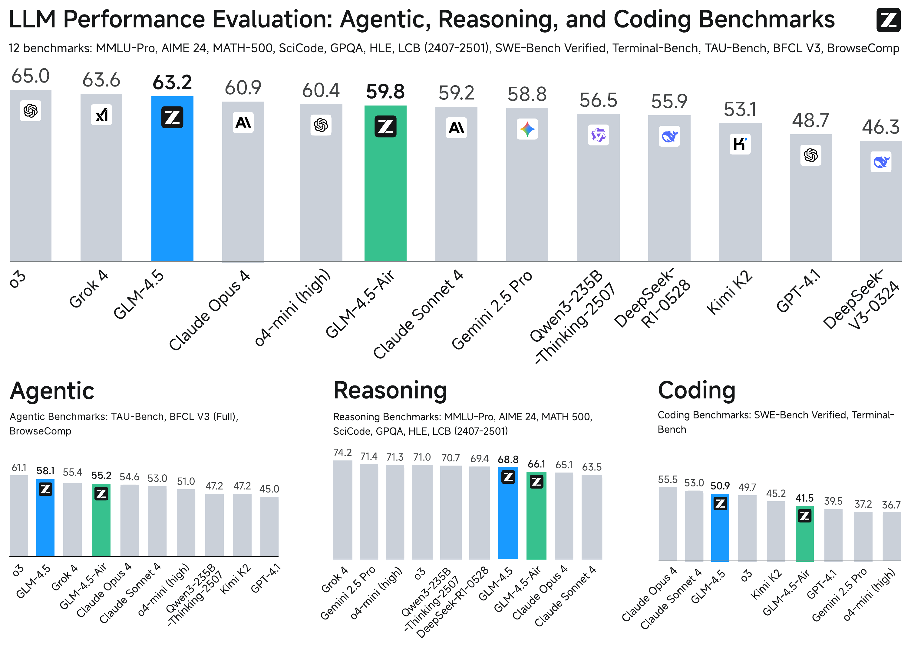
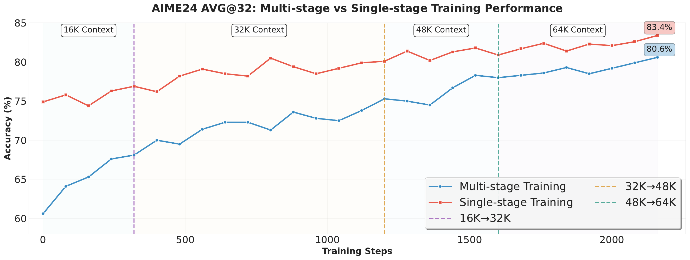
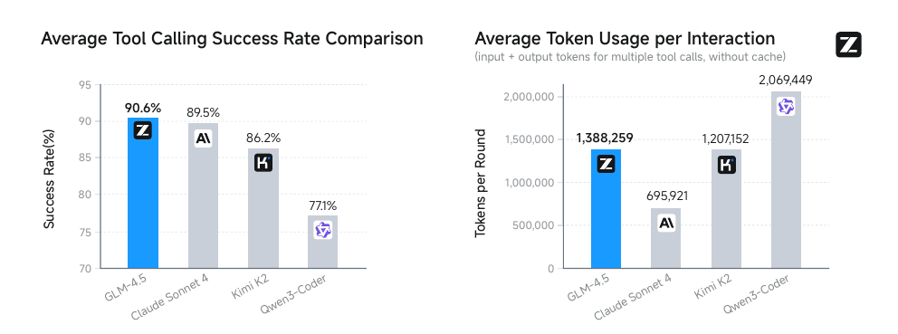

问题与背景

GLM-4.5 在 ARC 类任务上与闭源旗舰模型对比
核心挑战
当前顶级 LLM（o3、Claude Opus 4、Gemini 2.5 Pro）在 ARC 任务上已展示强大能力，但闭源 + 高昂推理成本限制研究社区跟进。
核心问题：如何在远少参数下（355B vs 671B+）实现同等的 Agentic / Reasoning / Coding 能力？
核心创新
更深 MoE（增加 depth，减少 width）在推理 benchmark 上优于更宽模型；自蒸馏统一多 Expert 能力为单一 hybrid model
Architecture
MoE
→
Sigmoid Gates
→
Loss-free Balance
→
QK-Norm
→
MTP Layer
预训练 23T tokens：Web（Nemotron-CC 质量分桶）+ 多语言（Fineweb-2）+ Code（FIM）+ Math & Science
核心方法

Post-Training 四阶段流程
Post-Training: Expert Model Iteration
Stage 1: Expert Training
三个独立 Expert Model（Reasoning / Agent / General chat），各自 SFT cold-start + RL
Stage 2: Unified Training
自蒸馏将多 Expert 能力整合为单一 hybrid model，同时支持 thinking 和 direct response 模式
Reasoning RL
难度课程两阶段
第二阶段直接切换到极难题目（pass@8=0, pass@512>0），持续提升而非渐进增加难度
Token-weighted Mean Loss
对 code RL 比 sequence-mean loss 收敛更快，抑制"base case"重复生成
64K Output Length 单阶段 RL
直接训练 64K 输出更好，引入短阶段会让模型"unlearn"长上下文能力
Agentic RL
BrowseComp + SWE
知识图谱多跳推理 + GitHub PR/issue 分布式沙箱测试
Iterative Self-distillation
RL提升 → self-distillation → 再RL，逐阶段提升
实验结果
ARC 核心任务
| Benchmark |
GLM-4.5 |
o3 |
Claude 4 |
Gemini 2.5P |
| TAU-Bench |
70.1 |
— |
— |
— |
| AIME 24 |
91.0 |
90.3 |
75.7 |
88.7 |
| SWE-bench V. |
64.2 |
69.1 |
67.8 |
49.0 |
| MMLU-Pro |
84.6 |
85.3 |
87.3 |
86.2 |
| BFCL V3 |
77.8 |
— |
— |
— |
Coding Agent CC-Bench
vs Claude Sonnet 4
40.4% win
90.6%
Tool Calling 成功率
所有模型中最高
翻译能力
| Model |
Score (0-3) |
| GLM-4.5 |
1.71 |
| Seed-X |
0.65 |
| Qwen-MT-plus |
0.38 |
超越专用 MT 模型

Coding Agent 任务表现
01
更深 MoE 比更宽模型更利于推理任务，depth 是推理能力的核心驱动力
02
Hybrid thinking 模式（thinking + direct）是平衡深度推理和效率的正确方向
03
难度课程第二阶段直接上极难题（pass@8=0, pass@512>0）比渐进增加难度更有效
04
90.6% tool calling 成功率说明 GLM-4.5 的 function calling 能力已达 SOTA